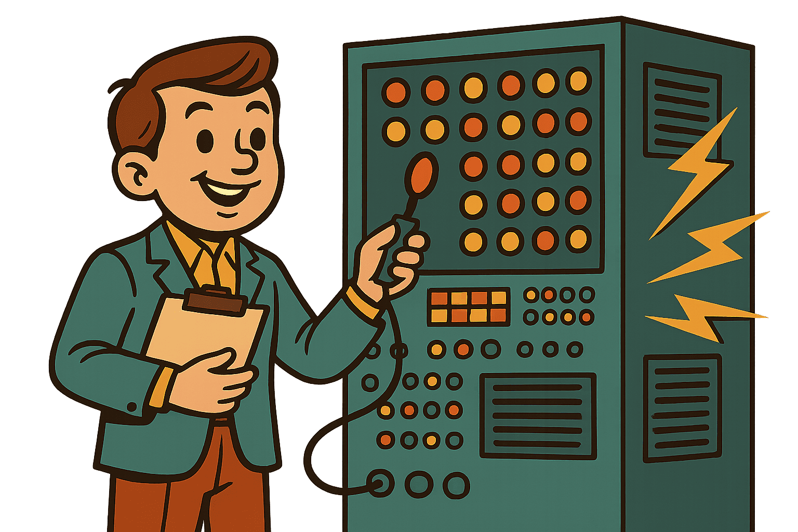
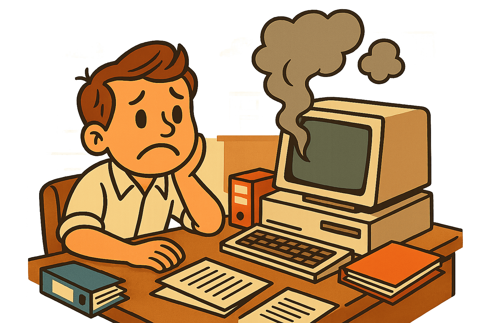

Как появился тестировщик?
Первые электронные компьютеры начали появляться уже в середине 1940-х годов: в 1946 году был запущен ENIAC – один из первых полнофункциональных электронных цифровых компьютеров, и программное обеспечение к нему отлаживали сами инженеры-разработчики. По мере роста сложности и объёма кода в 1960-х годах стало очевидно, что одной отладки «на лету» недостаточно, и начали формироваться первые практики независимой проверки качества. В 1970 году Уинстон Ройс описал каскадную модель разработки (Waterfall), где чётко выделялся отдельный этап тестирования, и именно тогда стали появляться первые специалисты, отвечавшие исключительно за проверку программ. К середине 1970-х IEEE опубликовала первые стандарты по методам верификации и валидации ПО, что ещё больше закрепило роль тестировщика как самостоятельной профессии. В начале 1980-х модель V-образного жизненного цикла (V-model) окончательно разделила функции разработки и тестирования, и с тех пор тестировщик существует как отдельная, ключевая часть любой команды по созданию программных продуктов.

Чем отличались тестировщики в начале пути?
В начале 1970-х роль тестировщика ещё лишь формировалась, поэтому первые специалисты по проверке качества заметно отличались от современных коллег. Во-первых, они почти всегда выходцы из самого отдела разработки или системного администрирования и обладали глубокими знаниями «железа» — умели читать электрические схемы, чинить сбои памяти и разбираться в микрокоде, поскольку ошибки чаще проявлялись на границе программного и аппаратного уровней. Во-вторых, основной рабочей средой оставались пакетные вычисления на мэйнфреймах: тестировщики готовили стопки перфокарт, запускали ночные партии и к утру анализировали длинные листинги из линейных принтеров — каждую аномалию приходилось отыскивать глазами без поддержки интерактивных отладчиков. Автоматизация была минимальной: вместо скриптов использовали бумажные чек-листы и так называемые «тест-дековые» колоды карт, а результаты фиксировались в лабораторных журналах и внутренних меморандумах. Наконец, методики лишь зарождались: термин «QA» ещё не вошёл в обиход, регламентов типа IEEE 829 не существовало, поэтому успех зависел от личного опыта и инженерной интуиции. Именно эта универсальность и тесная связь с аппаратурой отличали первых тестировщиков от более узкоспециализированных профессионалов, появившихся позднее.

Особенности тестирования
Термин smoke test пришёл в индустрию из электроники: инженеры впервые включали собранную плату в сеть и, если «волшебный синий дым» оставался внутри, переходили к дальнейшим измерениям — короткое замыкание обнаруживалось буквально по запаху. В 1980-х аналогию подхватили разработчики ПО: «дымовым» стали называть минимальный набор базовых проверок (Build Verification Test), позволяющий убедиться, что свежая сборка вообще запускается и выполняет критические сценарии без фатальных ошибок. Такой подход имеет три характерные черты:
Грубый фильтр: покрытие лишь «красных кнопок» - логин, базовые расчёты, сохранение данных; провал одного теста достаточно, чтобы вернуть сборку разработчикам.
Частота и скорость: smoke-набор гоняется при каждом коммите или ночной сборке, занимая минуты и служа триггером для дальнейшей, более глубокой проверки (sanity, регресс).
Автоматизация по максимуму: ещё в середине 1990-х Канер, Бах и Петтикорд рекомендовали внедрять smoke-прогоны в скрипты сборочной линии, чтобы ловить «дым» до того, как им «запахнет» на стенде тестировщиков.